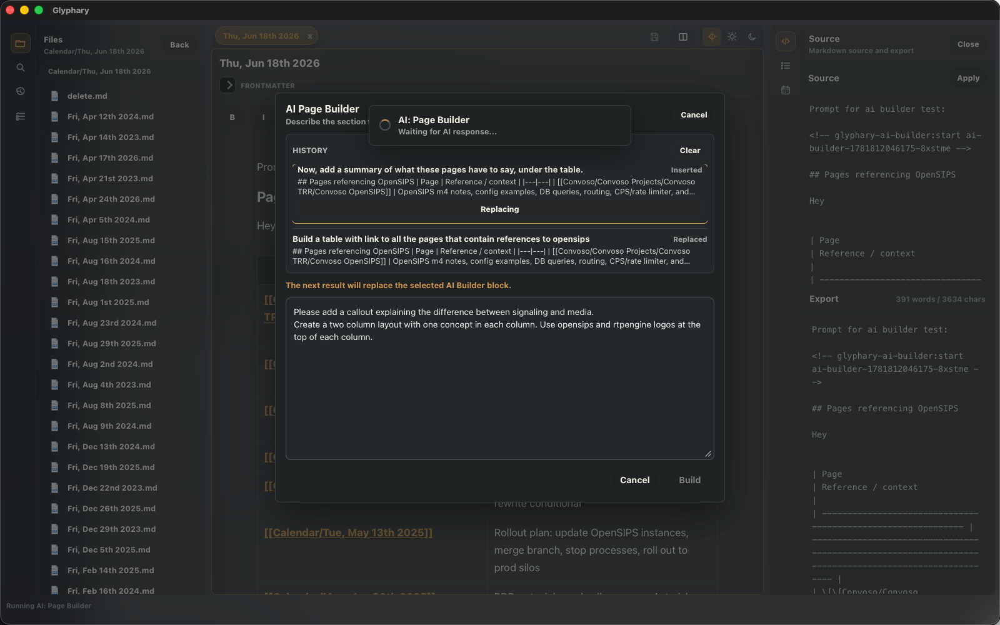
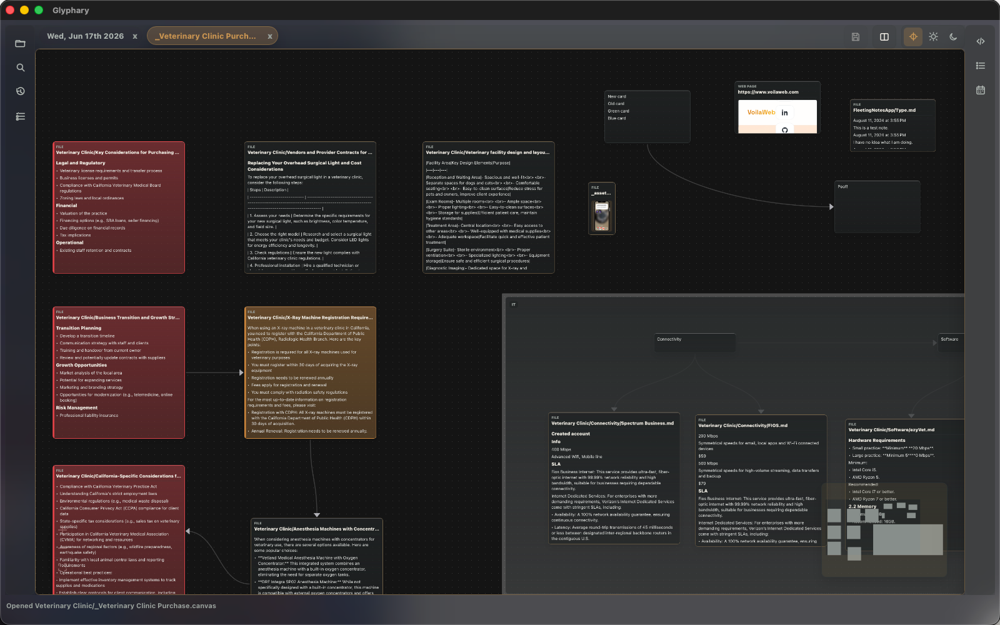

Five-minute path
- Download or clone the demonstration vault.
- Open Glyphary.
- Choose File -> Open Vault... and select the demo folder.
- Click a file in the left drawer.
- Type in the editor, then press Cmd+S.
- Press Cmd+P and run Insert callout.
Start here
This manual is written for hands-on use: it helps new users get productive and gives evaluators a concrete tour of Glyphary's real workflows. Work through the sections in order once, then use the sidebar as a reference.

.glyphary/config.json.Download the latest build from GitHub Releases. Open the newest release and choose the asset for your operating system.
.dmg from the Glyphary releases page.Launch Glyphary, then choose File -> Open Vault... and select your notes folder. Glyphary works directly on local folders; it does not require importing or uploading your vault.
Use File -> Open Vault... from the native menu and choose the vault root folder.
Before a vault is open, Glyphary keeps the window focused on the open-vault invitation and hides document, drawer, appearance, and status controls.
Every opened folder is added to the Vaults switcher in the left rail. Open the switcher to move between vaults without using the system picker again. Glyphary saves the active page before switching and restores the selected vault's own workspace.
Right-click a vault in the switcher to choose or remove a cover image, open it, or forget it. Forgetting removes the folder from the switcher; it does not delete the vault.
The app window is split into stable regions so scrolling one area does not move the rest.
On macOS, the system menu bar provides File, Edit, Insert, Format, View, Window, and Help commands. It includes Open Recent, active-file actions, table formatting, appearance and drawer toggles, and tab navigation. Settings opens in its own window, and file, table, Base, and vault-library context menus use native menus when available.
Opening a supported .md, .canvas, or .base file
from Finder opens it when it belongs to the current vault. Files outside that vault are
ignored rather than silently changing the workspace root.
The left drawer opens expanded by default and has Files, Search, Recent, Starred, and Tasks views.
When Files is active, the titlebar shows Back, New Note, and New Folder. Interface settings can hide either creation button without removing the same command from the folder context menu.
The document-opening setting also applies to Search, Recent, Starred, and Tasks.
Settings can show files inside the folder tree, add a background behind that tree, and display a text excerpt under each file. Image previews use the first resolvable image in the note and can be disabled independently.
Search can match filenames or Markdown file contents. Content search runs inside
Glyphary using the same grep crates that power ripgrep-style matching, so no external
rg binary is required. Search results are grouped by file, show a match
count, and are sorted from the most recently modified page down to older notes.
Recent shows the newest files you opened in this vault. Opening a recent item activates it in the current editor pane and updates the left-drawer selection when the file is available in the current vault.
Run Star File from the Format menu or command palette to keep any note, canvas, or Base in the Starred view. Drag starred rows to reorder them. Renaming or moving a starred item updates its saved path; deleting it removes the stale star.
Tasks scans visible Markdown files for task-list items such as - [ ] and
- [x]. Dotfiles and dot folders are excluded. Use the filters to show
incomplete, complete, or all tasks; use the search field to narrow the displayed list;
and sort by task text or file date.
Right-click entries in the Files view to use the native file actions available for that item.
.canvas file inside a folder and open it in the active pane.old/old.md to new/new.md.Moving or renaming files updates open tabs, recent files, and the in-memory wikilink index immediately so the workspace keeps pointing at the new path.
The editor is WYSIWYG, but it serializes back to Markdown.
Use the View/Edit icon selector beside the appearance control to choose how much editing chrome is visible. View mode hides the frontmatter area and formatting toolbar while the document remains editable, so a banner image or first heading can sit directly above the note body.
Supported highlighted languages are Plain text, Python, Shell, JavaScript, TypeScript,
JSON, Rust, SQL, HTML, CSS, and Markdown. Common aliases such as bash,
js, ts, rs, and md are recognized.
When the cursor is inside a code block, the language picker appears on that block. Pressing Tab inside a code block inserts indentation instead of moving focus away from the editor, and the editor uses four-space tab sizing.
Press Cmd+F to search the active Markdown page. Glyphary highlights all matches, reports the current match count, and supports Enter/Shift+Enter or the Up/Down buttons for navigation. Press Esc to close the search bar.
Press Cmd+P or use the command button beside Save. Type to filter, use arrow keys to move, Enter to run, and Esc to close.
```toc block.Glyphary can run AI commands against an OpenAI-compatible backend. AI commands are hidden until they are enabled in Settings, so the command palette stays focused when no AI provider is configured.
The default backend shape follows the OpenAI-compatible API convention: a base URL such
as https://api.openai.com/v1, an API key, and a selected chat model.
Open the command palette with Cmd+P, choose AI ..., then select the command you want to run. Most commands work on selected text; commands such as Generate title and Continue writing can use the current note and cursor context.
While the request is running, Glyphary shows an AI progress overlay so the editor does not appear frozen. AI output is then shown in a review dialog before Glyphary changes the note. Use Replace Selection when the result should overwrite the selected text, or Insert Below when you want to keep the original and add the result after it. Press Esc to dismiss the review dialog without applying the response.
AI Builder is part of the AI command group. It creates or revises page sections in the current editor, then shows a review dialog before anything is inserted or replaced.

Ask for page-local work such as drafting a section, creating columns, adding callouts, continuing from the cursor, or refining a previously inserted AI Builder block. When you run a follow-up prompt, Glyphary targets the latest still-present AI Builder block so the result can replace it instead of appending another copy.
AI Builder keeps a per-file conversation history. Previously applied Builder results are tracked with invisible Markdown comments so follow-up requests can replace the generated region cleanly while leaving normal rendered editing uncluttered.
If the prompt asks about the vault, all pages, matching notes, related files, tasks, or
todos, Glyphary first performs local bounded retrieval. It searches visible Markdown
files, reads a small number of matching notes, includes compact excerpts and snippets,
and asks the AI to cite source notes with [[Note Name]] links.
Summarize all pages pertaining to opensips.
Create a table of open tasks related to networking.
Build a project brief from notes about database migrations.
AI Builder also understands reference-style prompts. For example, this request searches
visible Markdown notes for opensips, then builds a table from the matching
pages:
Create a table with links to all the pages that reference opensipsAfter applying the result, you can reopen AI Builder and refine the same generated block:
Create a summary of what these pages have to say under the tableIf the Builder proposes external images, logos, or other visual assets, Glyphary opens an asset review step before applying the page change. Approved assets are imported into the vault image directory and the generated Markdown is rewritten to use normal local vault image references.
Frontmatter is hidden from the WYSIWYG body, preserved on save, and available from the disclosure row above the editor. Each property has its own single-line editor; add and remove properties without editing the raw frontmatter block. Edit the left field to rename a property; scalar values are normalized to one line. YAML and TOML delimiters are preserved.
---
tags:
- databases
- devops
banner: '![[Pasted image 20230521183520.png]]'
---
Tags are edited as individual pills. Any other property loaded with multiple values is
presented the same way, including inline arrays such as [draft, project] and
YAML block lists. Press Enter to add a value and remove a pill without rewriting the rest.
A banner value can display a vault image above the metadata area. Bare image
names resolve through _assets_/images; paths such as
Attachments/banner.png resolve relative to the vault root.
Glyphary can keep multiple documents open and split the editor into two independent tab groups. The last tab can be closed, leaving a quiet center workspace with no document open.
Configure New Tab in Settings to choose the vault file opened by Cmd+T. When no file is configured, Cmd+T leaves the workspace unchanged and the status bar invites you to choose a new-tab note.

The right drawer is closed by default and includes Source/Export, Table of Contents, and Calendar.
Search by filename or content. Content search is built into Glyphary and uses bounded in-process grep-style matching across visible vault files. The results list shows one row per file, reports how many matches were found in that file, and keeps newer pages above older ones.

[[Dad Jokes]]
[[Calendar/Mon, Dec 22nd 2025]]
[[Dad Jokes|A better label]]
Typing [[ opens page search. Exact vault-relative matches win first;
duplicate basename matches show a chooser. The chooser supports arrow-key navigation
and Enter selection. Aliases preserve their target while rendering the text after the
pipe. Inside a Markdown table, that alias pipe remains part of the wikilink instead of
splitting the cell.
Glyphary Markdown support is extension-driven: files stay plain Markdown on disk, while the editor renders the syntax that Glyphary knows how to round-trip. This is the Glyphary reference, not a generic TipTap or ProseMirror feature matrix.
#, ##, ###.**bold**, *italic*, `inline code`, ~~strikethrough~~, ==highlight==, ^superscript^, ~subscript~, <kbd>Cmd</kbd>, links, and images.mermaid fences.Use the table icon to insert a table. When inside a table, palette commands appear for rows, columns, and table deletion. You can also right-click a table to use the same row and column commands, plus Align column... for left, center, or right text alignment.
| Item | Amount |
| :--- | -----: |
| Rent | $1,200 |
Markdown alignment rows are supported: a leading colon aligns left, a trailing colon
aligns right, and both sides center the column. Glyphary does not currently support
attribute-list syntax such as {align=right} for table cells or columns.
Wikilink aliases work inside table cells without escaping the pipe:
| [[Databases|Database notes]] | parses and saves as one cell.
- [ ] Collect screenshots
- [x] Open the vault[[Page Name]]
[[Folder/Page Name]]
[[Page Name|Display text]]
![[Pasted image 20230521183520.png]]
![[_assets_/drawings/System sketch 20230102173741.excalidraw]]

Wikilink aliases render as the display text while preserving the target path in
Markdown. Vault images resolve relative paths and also check _assets_/images.
Excalidraw drawings are stored under _assets_/drawings. YouTube URLs used
as Markdown images render as thumbnails, and clicking the thumbnail opens the original
video URL.
---
tags:
- project
banner: '![[Pasted image 20230521183520.png]]'
---
Frontmatter stays editable in Edit mode as single-line property rows. Keys and scalar
values can be changed in place, properties can be added or removed, and tags or any
detected multi-value property use editable pills. YAML --- and TOML
+++ delimiters are preserved. A banner displays a page banner
above the frontmatter area when the referenced image is found.
```toc
```When not editing the block, Glyphary renders it as a table of contents.
::: columns
::: column
Left content
:::
::: column
Right content
:::
:::
::: gallery
![[Screenshot 1.png]]
![[Screenshot 2.png]]
:::Use Gallery layout with selected images to create a responsive image grid.
::: callout warning "Database Migration"
Back up the database first.
:::Supported visual types include note, info, tip, and warning.

::: collapse "More details"
Hidden content starts collapsed.
:::
::: collapse "Already open" open
This starts expanded.
:::
open to start expanded.::: rich-link
url: https://example.com
title: Example
description: A saved preview card.
siteName: Example
:::Run Insert rich link, paste a URL, and Glyphary fetches metadata. If no metadata image exists, it tries an early page image.

Use Insert HTML block from the toolbar or command palette to insert an editable HTML block. Glyphary renders a sanitized preview and keeps the source editable inside the block. Script-like tags and unsafe attributes are stripped from the preview; the feature is for trusted note content, not for running arbitrary app code.
<div class="note-card">
<strong>Hello</strong>
</div>
Glyphary can open Obsidian-compatible .canvas files from the vault. Click a
canvas file in the Files drawer and it opens in a tab as a graph editor. Canvas files use a
connected-node file icon in the Files and Recent drawers so they are easy to distinguish from
Markdown notes.

Save the tab normally to write node creation, node movement, edge edits, and node
deletions back to the .canvas file. Glyphary preserves unknown JSON Canvas
fields so Obsidian and plugin-specific metadata can round-trip even when Glyphary does not
render that metadata directly.
Glyphary opens .base files as local database-style views over Markdown notes.
Base definitions query note properties from frontmatter and render matching files as
tables or gallery cards without moving data out of the vault.
views:
- type: table
name: Sources
filters:
- property: source
exists: trueGallery cards can show the first image found in a note, including vault images and remote image URLs. The card image layout can be set to side-by-side or image-on-top in Settings.
Glyphary-managed images live in _assets_/images. Dragging or pasting an image saves it there and inserts a reference.
![[Pasted image 20260613133301.png]]

Bare wiki image embeds such as ![[image.png]] resolve from
_assets_/images. Double-click an image in the editor to inspect it at full
size, then press Esc to close the preview. YouTube URLs used as Markdown image sources
display a thumbnail in the page; click the thumbnail to open the video.
Calendar notes live under Calendar/. Existing files display dots. Hover a
day to preview its rendered note, or see that no note exists yet; the preview delay is
configurable in Settings. Double-click a day to open or create its note.
Calendar/Sun, Jun 14th 2026.mdRun Create Tidbit from the command palette to create a note from the configured path pattern.
__transit__/Objects/tidbit-{{date:YYYY-mm-DD-hh-mm-ss}}.mdEnable global capture in Settings, focus the shortcut field, press the desired hotkey, and save settings. On macOS, Glyphary asks for accessibility permission only when this feature is enabled. The shortcut is intended for a running app with an available vault; if no vault is open, the capture window is not shown.
The capture window is a lightweight editor for the new tidbit. Its title can be renamed by double-clicking, following the same rename rules as the main editor.
Settings are stored per vault at <vault root>/.glyphary/config.json.
| Images | _assets_/images |
|---|---|
| Drawings | _assets_/drawings |
| CSS snippets | _snippets_ |
| Plugins | .glyphary/plugins |
| Document opening | One click |
| Files titlebar actions | New Note and New Folder shown |
.glyphary/plugins.Appearance settings include Auto/Light/Dark, glass effect and opacity, UI text weight, rounded corners, margins, theme templates, and CSS snippets. The Interface group under Main controls the title-bar document proxy and status bar. The document proxy shows the active filename and opens native Reveal, Open in Default App, and Copy Path actions.
The builder exposes Canvas, Text, Accent And Borders, Blocks, Callouts, Syntax, Typography, and Spacing And Shape.
Approve CSS snippets from _snippets_. See the dedicated theming reference.
Appearance can add colorful heading levels, heading underlines, heading anchor markers, rich callout styling, structured callout layouts, and per-callout icons on top of the selected theme template.
Plugins are vault-scoped and disabled by default. Install them under .glyphary/plugins.
{
"id": "meeting_tools",
"name": "Meeting Tools",
"runtime": "glyphary-wasm-transform@1",
"commands": []
}Authoring details live in the plugin authoring guide.
Enable Vim mode in Settings. The status bar reports Vim normal mode and Vim insert mode.
| Cmd+P | Open command palette. |
|---|---|
| Cmd+F | Find text in the active Markdown page. |
| Cmd+N | Create a new note. |
| Cmd+O | Open a vault folder. |
| Cmd+T | Open the configured New Tab file, or show a status prompt if none is configured. |
| Cmd+W | Close the active tab. If it is the last clean tab, the center workspace becomes empty. |
| Ctrl+Tab | Show the next tab; add Shift for the previous tab. |
| Cmd+Shift+[ / ] | Show the previous or next tab on macOS. |
| Cmd+Alt+S | Toggle the left drawer. |
| Cmd+Alt+I | Toggle the inspector. |
| Cmd+S | Save the active document. |
| Cmd+Shift+V | Paste plain text without formatting. |
| Cmd+, | Open Settings. |
| Esc | Close dialogs, previews, or enter Vim Normal mode. |
The native About panel shows the current app version and implementation credits. On launch, Glyphary checks GitHub Releases for a newer version; when one is available, the update dialog shows its release notes and links to the download page. Failed checks stay silent and never interrupt local editing. Debug settings expose global shortcut diagnostics.
Check that the file is under _assets_/images and that the Markdown reference is local.
Glyphary is a Tauri, React, TypeScript, and Rust app. The Makefile wraps the common setup, build, and release commands.
git clone https://github.com/glyphary/glyphary.git
cd glyphary
make install
make install runs npm install and prepares the macOS Rust targets used
by the desktop build. You also need the Rust toolchain and Xcode Command Line Tools installed.
make devThis starts the Vite frontend and the Tauri desktop shell together.
make build
make check
make test
make build builds the frontend, make check adds a Rust compile check,
and make test runs frontend and Rust tests.
make prod-app
make release
make prod-app creates a macOS app bundle. make release creates the
production release bundle used for distribution.